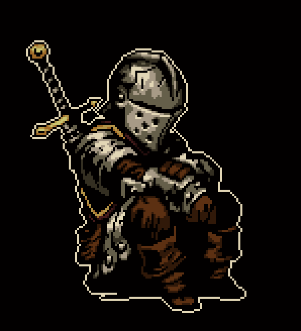
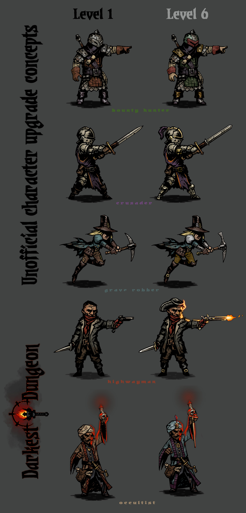
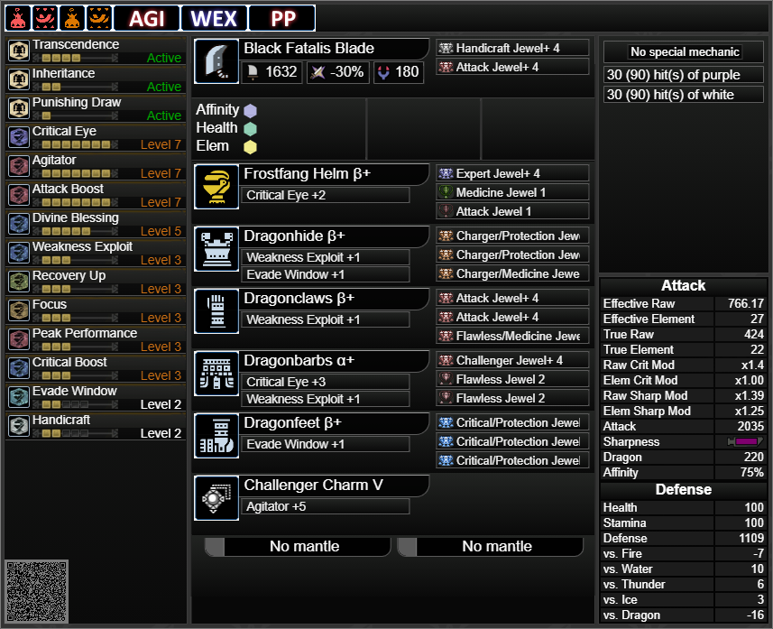
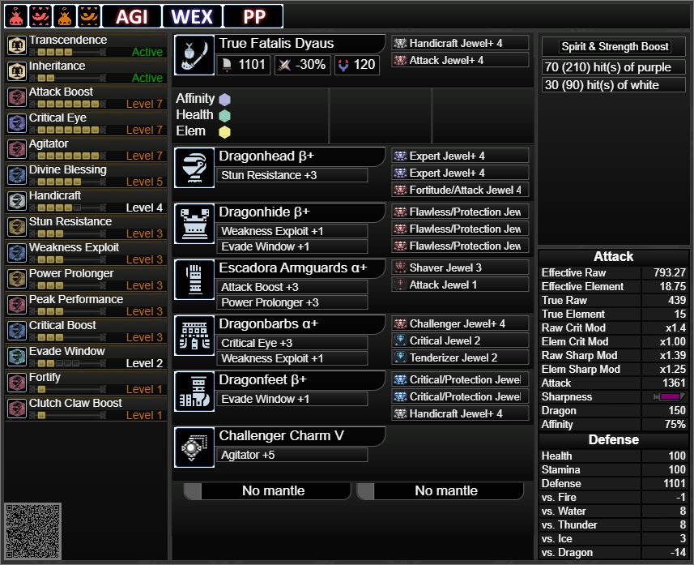

Mein Portfolio
Boardgame Konzept "Darkest Dungeon"
Inspiriert von dem Spiel "Darkest Dungeon" habe ich angefangen an einem Brettspiel-Dungeoncrawler zu arbeiten mit dem WIP titel "Dorkest Dungeon".
Da ich nicht einfach meine arbeit so ins netz stellen möchte biete ich hier zwei inspirational artworks aus dem spiel
Die "Crusader" Klasse
Mehrere artworks für Sprites verschiedener Klassen
MHW Buildguids
In meiner liebe für systemic in spielen und meiner liebe für videospiele mathematik half ich in einem "setoptimizer" team in Monster Hunter World mit,
Mathematisch Effiziente und gute builds zu kreiren. in meinem fall für meine beiden meist gespielten Waffenklassen das "Großschwert" und die "Insect Gleve"
Letzter Meta-build für den playstyle "punishing Draw GS" patch v.15.01
Der letzte Meta-build den generalist style der Insekt Gleve patch v.15.01
Erstellt wurden diese Buildcards mit einem Tool genant Honeyhunter ein Build-Calculator der aller feinsten sorte
Blender
Das interesanteste bisher war die animation einen feuerspeienden drachens im rahmen des Computer Graphic Seminars